MAXimal
добавлено: 11 Jun 2008 10:56
редактировано: 24 Jan 2013 12:47
Содержание [скрыть]
Система непересекающихся множеств
В данной статье рассматривается структура данных "система непересекающихся множеств" (на английском "disjoint-set-union", или просто "DSU").
Эта структура данных предоставляет следующие возможности. Изначально имеется несколько элементов, каждый из которых находится в отдельном (своём собственном) множестве. За одну операцию можно объединить два каких-либо множества, а также можно запросить, в каком множестве сейчас находится указанный элемент. Также, в классическом варианте, вводится ещё одна операция — создание нового элемента, который помещается в отдельное множество.
Таким образом, базовый интерфейс данной структуры данных состоит всего из трёх операций:
- — добавляет новый элемент
 , помещая его в новое множество, состоящее из одного него.
, помещая его в новое множество, состоящее из одного него. - — объединяет два указанных множества (множество, в котором находится элемент , и множество, в котором находится элемент
 ).
). - — возвращает, в каком множестве находится указанный элемент . На самом деле при этом возвращается один из элементов множества (называемый представителем или лидером (в англоязычной литературе "leader")). Этот представитель выбирается в каждом множестве самой структурой данных (и может меняться с течением времени, а именно, после вызовов ).
Например, если вызов
 для каких-то двух элементов вернул одно и то же значение, то это означает, что эти элементы находятся в одном и том же множестве, а в противном случае — в разных множествах.
для каких-то двух элементов вернул одно и то же значение, то это означает, что эти элементы находятся в одном и том же множестве, а в противном случае — в разных множествах.
Описываемая ниже структура данных позволяет делать каждую из этих операций почти за  в среднем (более подробно об асимптотике см. ниже после описания алгоритма).
в среднем (более подробно об асимптотике см. ниже после описания алгоритма).
Также в одном из подразделов статьи описан альтернативный вариант реализации DSU, позволяющий добиться асимптотики  в среднем на один запрос при ; а при > n"> (т.е. 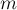 значительно больше
в среднем на один запрос при ; а при > n"> (т.е. 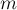 значительно больше  ) — и вовсе времени в среднем на запрос (см. "Хранение DSU в виде явного списка множеств").
) — и вовсе времени в среднем на запрос (см. "Хранение DSU в виде явного списка множеств").
Построение эффективной структуры данных
Определимся сначала, в каком виде мы будем хранить всю информацию.
Множества элементов мы будем хранить в виде деревьев: одно дерево соответствует одному множеству. Корень дерева — это представитель (лидер) множества.
При реализации это означает, что мы заводим массив , в котором для каждого элемента мы храним ссылку на его предка в дерева. Для корней деревьев будем считать, что их предок — они сами (т.е. ссылка зацикливается в этом месте).
Наивная реализация
Мы уже можем написать первую реализацию системы непересекающихся множеств. Она будет довольно неэффективной, но затем мы улучшим её с помощью двух приёмов, получив в итоге почти константное время работы.
Итак, вся информация о множествах элементов хранится у нас с помощью массива .
Чтобы создать новый элемент (операция ), мы просто создаём дерево с корнем в вершине  , отмечая, что её предок — это она сама.
, отмечая, что её предок — это она сама.
Чтобы объединить два множества (операция ), мы сначала найдём лидеров множества, в котором находится  , и множества, в котором находится 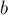. Если лидеры совпали, то ничего не делаем — это значит, что множества и так уже были объединены. В противном случае можно просто указать, что предок вершины равен (или наоборот) — тем самым присоединив одно дерево к другому.
, и множества, в котором находится 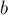. Если лидеры совпали, то ничего не делаем — это значит, что множества и так уже были объединены. В противном случае можно просто указать, что предок вершины равен (или наоборот) — тем самым присоединив одно дерево к другому.
Наконец, реализация операции поиска лидера () проста: мы поднимаемся по предкам от вершины , пока не дойдём до корня, т.е. пока ссылка на предка не ведёт в себя. Эту операцию удобнее реализовать рекурсивно (особенно это будет удобно позже, в связи с добавляемыми оптимизациями).
void make_set (int v) { parent[v] = v; } int find_set (int v) { if (v == parent[v]) return v; return find_set (parent[v]); } void union_sets (int a, int b) { a = find_set (a); b = find_set (b); if (a != b) parent[b] = a; }
Впрочем, такая реализация системы непересекающихся множеств весьма неэффективна. Легко построить пример, когда после нескольких объединений множеств получится ситуация, что множество — это дерево, выродившееся в длинную цепочку. В результате каждый вызов будет работать на таком тесте за время порядка глубины дерева, т.е. за  .
.
Это весьма далеко от той асимптотики, которую мы собирались получить (константное время работы). Поэтому рассмотрим две оптимизации, которые позволят (даже применённые по отдельности) значительно ускорить работу.
Эвристика сжатия пути
Эта эвристика предназначена для ускорения работы .
Она заключается в том, что когда после вызова мы найдём искомого лидера  множества, то запомним, что у вершины и всех пройденных по пути вершин — именно этот лидер . Проще всего это сделать, перенаправив их на эту вершину .
множества, то запомним, что у вершины и всех пройденных по пути вершин — именно этот лидер . Проще всего это сделать, перенаправив их на эту вершину .
Таким образом, у массива предков смысл несколько меняется: теперь это сжатый массив предков, т.е. для каждой вершины там может храниться не непосредственный предок, а предок предка, предок предка предка, и т.д.
С другой стороны, понятно, что нельзя сделать, чтобы эти указатели всегда указывали на лидера: иначе при выполнении операции пришлось бы обновлять лидеров у элементов.
Таким образом, к массиву следует подходить именно как к массиву предков, возможно, частично сжатому.
Новая реализация операции выглядит следующим образом:
int find_set (int v) { if (v == parent[v]) return v; return parent[v] = find_set (parent[v]); }
Такая простая реализация делает всё, что задумывалось: сначала путём рекурсивных вызовов находится лидера множества, а затем, в процессе раскрутки стека, этот лидер присваивается ссылкам для всех пройденных элементов.
Реализовать эту операцию можно и нерекурсивно, но тогда придётся осуществлять два прохода по дереву: первый найдёт искомого лидера, второй — проставит его всем вершинам пути. Впрочем, на практике нерекурсивная реализация не даёт существенного выигрыша.
Оценка асимптотики при применении эвристики сжатия пути
Покажем, что применение одной эвристики сжатия пути позволяет достичь логарифмическую асимптотику: на один запрос в среднем.
Заметим, что, поскольку операция представляет из себя два вызова операции и ещё операций, то мы можем сосредоточиться в доказательстве только на оценку времени работы  операций .
операций .
Назовём весом вершины число потомков этой вершины (включая её саму). Веса вершин, очевидно, могут только увеличиваться в процессе работы алгоритма.
Назовём размахом ребра  разность весов концов этого ребра:
разность весов концов этого ребра: ![|w[a] - w[b]|](../tex2png/cache/535462d50ca6cb481cab97fed13c7a2b.png) (очевидно, у вершины-предка вес всегда больше, чем у вершины-потомка). Можно заметить, что размах какого-либо фиксированного ребра может только увеличиваться в процессе работы алгоритма.
(очевидно, у вершины-предка вес всегда больше, чем у вершины-потомка). Можно заметить, что размах какого-либо фиксированного ребра может только увеличиваться в процессе работы алгоритма.
Кроме того, разобьём рёбра на классы: будем говорить, что ребро имеет класс  , если его размах принадлежит отрезку . Таким образом, класс ребра — это число от
, если его размах принадлежит отрезку . Таким образом, класс ребра — это число от  до 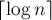.
до 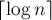.
Зафиксируем теперь произвольную вершину и будем следить, как меняется ребро в её предка: сначала оно отсутствует (пока вершина является лидером), затем проводится ребро из в какую-то вершину (когда множество с вершиной присоединяется к другому множеству), и затем может меняться при сжатии путей в процессе вызовов  . Понятно, что нас интересует асимптотика только последнего случая (при сжатии путей): все остальные случаи требуют времени на один запрос.
. Понятно, что нас интересует асимптотика только последнего случая (при сжатии путей): все остальные случаи требуют времени на один запрос.
Рассмотрим работу некоторого вызова операции : он проходит в дереве вдоль некоторого пути, стирая все рёбра этого пути и перенаправляя их в лидера.
Рассмотрим этот путь и исключим из рассмотрения последнее ребро каждого класса (т.е. не более чем по одному ребру из класса ). Тем самым мы исключили рёбер из каждого запроса.
Рассмотрим теперь все остальные рёбра этого пути. Для каждого такого ребра, если оно имеет класс , получается, что в этом пути есть ещё одно ребро класса (иначе мы были бы обязаны исключить текущее ребро, как единственного представителя класса ). Таким образом, после сжатия пути это ребро заменится на ребро класса как минимум  . Учитывая, что уменьшаться вес ребра не может, мы получаем, что для каждой вершины, затронутой запросом , ребро в её предка либо было исключено, либо строго увеличило свой класс.
. Учитывая, что уменьшаться вес ребра не может, мы получаем, что для каждой вершины, затронутой запросом , ребро в её предка либо было исключено, либо строго увеличило свой класс.
Отсюда мы окончательно получаем асимптотику работы запросов: , что (при ) означает логарифмическое время работы на один запрос в среднем.
Эвристика объединения по рангу
Рассмотрим здесь другую эвристику, которая сама по себе способна ускорить время работы алгоритма, а в сочетании с эвристикой сжатия путей и вовсе способна достигнуть практически константного времени работы на один запрос в среднем.
Эта эвристика заключается в небольшом изменении работы  : если в наивной реализации то, какое дерево будет присоединено к какому, определяется случайно, то теперь мы будем это делать на основе рангов.
: если в наивной реализации то, какое дерево будет присоединено к какому, определяется случайно, то теперь мы будем это делать на основе рангов.
Есть два варианта ранговой эвристики: в одном варианте рангом дерева называется количество вершин в нём, в другом — глубина дерева (точнее, верхняя граница на глубину дерева, поскольку при совместном применении эвристики сжатия путей реальная глубина дерева может уменьшаться).
В обоих вариантах суть эвристики одна и та же: при выполнении будем присоединять дерево с меньшим рангом к дереву с большим рангом.
Приведём реализацию ранговой эвристики на основе размеров деревьев:
void make_set (int v) { parent[v] = v; size[v] = 1; } void union_sets (int a, int b) { a = find_set (a); b = find_set (b); if (a != b) { if (size[a] < size[b]) swap (a, b); parent[b] = a; size[a] += size[b]; } }
Приведём реализацию ранговой эвристики на основе глубины деревьев:
void make_set (int v) { parent[v] = v; rank[v] = 0; } void union_sets (int a, int b) { a = find_set (a); b = find_set (b); if (a != b) { if (rank[a] < rank[b]) swap (a, b); parent[b] = a; if (rank[a] == rank[b]) ++rank[a]; } }
Оба варианта ранговой эвристики являются эквивалентными с точки зрения асимптотики, поэтому на практике можно применять любую из них.
Оценка асимптотики при применении ранговой эвристики
Покажем, что асимптотика работы системы непересекающихся множеств при использовании только ранговой эвристики, без эвристики сжатия путей, будет логарифмической на один запрос в среднем:  .
.
Здесь мы покажем, что при любом из двух вариантов ранговой эвристики глубина каждого дерева будет величиной , что автоматически будет означать логарифмическую асимптотику для запроса  , и, следовательно, запроса .
, и, следовательно, запроса .
Рассмотрим ранговую эвристику по глубине дерева. Покажем, что если ранг дерева равен , то это дерево содержит как минимум  вершин (отсюда будет автоматически следовать, что ранг, а, значит, и глубина дерева, есть величина ). Доказывать будем по индукции: для это очевидно. При сжатии путей глубина может только уменьшиться. Ранг дерева увеличивается с 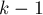 до , когда к нему присоединяется дерево ранга ; применяя к этим двум деревьям размера предположение индукции, получаем, что новое дерево ранга действительно будет иметь как минимум вершин, что и требовалось доказать.
вершин (отсюда будет автоматически следовать, что ранг, а, значит, и глубина дерева, есть величина ). Доказывать будем по индукции: для это очевидно. При сжатии путей глубина может только уменьшиться. Ранг дерева увеличивается с 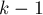 до , когда к нему присоединяется дерево ранга ; применяя к этим двум деревьям размера предположение индукции, получаем, что новое дерево ранга действительно будет иметь как минимум вершин, что и требовалось доказать.
Рассмотрим теперь ранговую эвристику по размерам деревьев. Покажем, что если размер дерева равен , то его высота не более . Доказывать будем по индукции: для  утверждение верно. При сжатии путей глубина может только уменьшиться, поэтому сжатие путей ничего не нарушает. Пусть теперь объединяются два дерева размеров
утверждение верно. При сжатии путей глубина может только уменьшиться, поэтому сжатие путей ничего не нарушает. Пусть теперь объединяются два дерева размеров  и 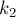; тогда по предположению индукции их высоты меньше либо равны, соответственно, и . Не теряя общности, считаем, что первое дерево — большее (), поэтому после объединения глубина получившегося дерева из вершин станет равна:
и 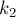; тогда по предположению индукции их высоты меньше либо равны, соответственно, и . Не теряя общности, считаем, что первое дерево — большее (), поэтому после объединения глубина получившегося дерева из вершин станет равна:
Чтобы завершить доказательство, надо показать, что:
что есть почти очевидное неравенство, поскольку и .
Объединение эвристик: сжатие пути плюс ранговая эвристика
Как уже упоминалось выше, совместное применение этих эвристик даёт особенно наилучший результат, в итоге достигая практически константного времени работы.
Мы не будем приводить здесь доказательства асимптотики, поскольку оно весьма объёмно (см., например, Кормен, Лейзерсон, Ривест, Штайн "Алгоритмы. Построение и анализ"). Впервые это доказательство было проведено Тарьяном (1975 г.).
Окончательный результат таков: при совместном применении эвристик сжатия пути и объединения по рангу время работы на один запрос получается в среднем, где — обратная функция Аккермана, которая растёт очень медленно, настолько медленно, что для всех разумных ограничений она не превосходит 4 (примерно для ).
Именно поэтому про асимптотику работы системы непересекающихся множеств уместно говорить "почти константное время работы".
Приведём здесь итоговую реализацию системы непересекающихся множеств, реализующую обе указанные эвристики (используется ранговая эвристика относительно глубин деревьев):
void make_set (int v) { parent[v] = v; rank[v] = 0; } int find_set (int v) { if (v == parent[v]) return v; return parent[v] = find_set (parent[v]); } void union_sets (int a, int b) { a = find_set (a); b = find_set (b); if (a != b) { if (rank[a] < rank[b]) swap (a, b); parent[b] = a; if (rank[a] == rank[b]) ++rank[a]; } }
Применения в задачах и различных улучшения
В этом разделе мы рассмотрим несколько применений структуры данных "система непересекающихся множеств", как тривиальных, так и использующих некоторые улучшения структуры данных.
Поддержка компонент связности графа
Это одно из очевидных приложений структуры данных "система непересекающихся множеств", которое, по всей видимости, и стимулировало изучение этой структуры.
Формально задачу можно сформулировать таким образом: изначально дан пустой граф, постепенно в этот граф могут добавляться вершины и неориентированные рёбра, а также поступают запросы — "в одинаковых ли компонентах связности лежат вершины и ?".
Непосредственно применяя здесь описанную выше структуру данных, мы получаем решение, которое обрабатывает один запрос на добавление вершины/ребра или запрос на проверку двух вершин — за почти константное время в среднем.
Учитывая, что практически в точности такая же задача ставится при использовании алгоритма Крускала нахождения минимального остовного дерева, мы сразу же получаем улучшенную версию этого алгоритма, работающую практически за линейное время.
Иногда на практике встречается инвертированная версия этой задачи: изначально есть граф с какими-то вершинами и рёбрами, и поступают запросы на удаление рёбер. Если задача дана в оффлайн, т.е. мы заранее можем узнать все запросы, то решать эту задачу можно следующим образом: перевернём задачу задом наперёд: будем считать, что у нас есть пустой граф, в который могут добавляться рёбра (сначала добавим ребро последнего запроса, затем предпоследнего, и т.д.). Тем самым в результате инвертирования этой задачи мы пришли к обычной задаче, решение которой описывалось выше.
Поиск компонент связности на изображении
Одно из лежащих на поверхности применений DSU заключается в решении следующей задачи: имеется изображение  пикселей. Изначально всё изображение белое, но затем на нём рисуется несколько чёрных пикселей. Требуется определить размер каждой "белой" компоненты связности на итоговом изображении.
пикселей. Изначально всё изображение белое, но затем на нём рисуется несколько чёрных пикселей. Требуется определить размер каждой "белой" компоненты связности на итоговом изображении.
Для решения мы просто перебираем все белые клетки изображения, для каждой клетки перебираем её четырёх соседей, и если сосед тоже белый — то вызываем от этих двух вершин. Таким образом, у нас будет DSU с вершинами, соответствующими пикселям изображения. Получившиеся в итоге деревья DSU — и есть искомые компоненты связности.
Данную задачу можно решить проще с использованием обхода в глубину (или обхода в ширину), однако у описанного здесь метода есть определённое преимущество: оно может обрабатывать матрицу построчно (оперируя только с текущей строкой, предыдущей строкой и системой непересекающихся множеств, построенной для элементов одной строки), т.е. используя порядка памяти.
Поддержка дополнительной информации для каждого множества
"Система непересекающихся множеств" позволяет легко хранить любую дополнительную информацию, относящуюся ко множествам.
Простой пример — это размеры множеств: как их хранить, было описано при описании ранговой эвристики (информация там записывалась для текущего лидера множества).
Таким образом, вместе с лидером каждого множества можно хранить любую дополнительную требуемую в конкретной задаче информацию.
Применение DSU для сжатия "прыжков" по отрезку. Задача о покраске подотрезков в оффлайне
Одно из распространённых применений DSU заключается в том, что если есть набор элементов, и из каждого элемента выходит по одному ребру, то мы можем быстро (за почти константное время) находить конечную точку, в которую мы попадём, если будем двигаться вдоль рёбер из заданной начальной точки.
Наглядным примером этого применения является задача о покраске подотрезков: есть отрезок длины 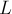, каждая клетка которого (т.е. каждый кусочек длины  ) имеет нулевой цвет. Поступают запросы вида — перекрасить отрезок 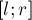 в цвет
) имеет нулевой цвет. Поступают запросы вида — перекрасить отрезок 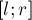 в цвет  . Требуется найти итоговый цвет каждой клетки. Запросы считаются известными заранее, т.е. задача — в оффлайне.
. Требуется найти итоговый цвет каждой клетки. Запросы считаются известными заранее, т.е. задача — в оффлайне.
Для решения мы можем завести DSU-структуру, которая для каждой клетки будет хранить ссылку на ближайшую справа непокрашенную клетку. Таким образом, изначально каждая клетка указывает на саму себя, а после покраски первого подотрезка — клетка перед началом подотрезка будет указывать на клетку после конца подотрезка.
Теперь, чтобы решить задачу, мы рассматриваем запросы перекраски в обратном порядке: от последнего к первому. Для выполнения запроса мы просто каждый раз с помощью нашего DSU находим самую левую непокрашенную клетку внутри отрезка, перекрашиваем её, и перебрасываем указатель из неё на следующую справа пустую клетку.
Таким образом, мы здесь фактически используем DSU с эвристикой сжатия путей, но без ранговой эвристики (т.к. нам важно, кто станет лидером после объединения). Следовательно, итоговая асимптотика составит на запрос (впрочем, с маленькой по сравнению с другими структурами данных константой).
Реализация:
void init() { for (int i=0; i<L; ++i) make_set (i); } void process_query (int l, int r, int c) { for (int v=l; ; ) { v = find_set (v); if (v >= r) break; answer[v] = c; parent[v] = v+1; } }
Впрочем, можно реализовать это решение с ранговой эвристикой: будем хранить для каждого множества в некотором массиве , где это множество заканчивается (т.е. самую правую точку). Тогда можно будет объединять два множества в одно по их ранговой эвристике, проставляя потом получившемуся множеству новую правую границу. Тем самым мы получим решение за  .
.
Поддержка расстояний до лидера
Иногда в конкретных приложениях системы непересекающихся множеств всплывает требование поддерживать расстояние до лидера (т.е. длину пути в рёбрах в дереве от текущей вершины до корня дерева).
Если бы не было эвристики сжатия путей, то никаких сложностей бы не возникало — расстояние до корня просто равнялось бы числу рекурсивных вызовов, которые сделала функция .
Однако в результате сжатия путей несколько рёбер пути могли сжаться в одно ребро. Таким образом, вместе с каждой вершиной придётся хранить дополнительную информацию: длину текущего ребра из вершины в предка.
При реализации удобно представлять, что массив и функция теперь возвращают не одно число, а пару чисел: вершину-лидера и расстояние до неё:
void make_set (int v) { parent[v] = make_pair (v, 0); rank[v] = 0; } pair<int,int> find_set (int v) { if (v != parent[v].first) { int len = parent[v].second; parent[v] = find_set (parent[v].first); parent[v].second += len; } return parent[v]; } void union_sets (int a, int b) { a = find_set (a) .first; b = find_set (b) .first; if (a != b) { if (rank[a] < rank[b]) swap (a, b); parent[b] = make_pair (a, 1); if (rank[a] == rank[b]) ++rank[a]; } }
Поддержка чётности длины пути и задача о проверке двудольности графа в онлайн
По аналогии с длиной пути до лидера, так же можно поддерживать чётность длины пути до него. Почему же это применение было выделено в отдельный пункт?
Дело в том, что обычно требование хранение чётности пути всплывает в связи со следующей задачей: изначально дан пустой граф, в него могут добавляться рёбра, а также поступать запросы вида "является ли компонента связности, содержащая данную вершину, двудольной?".
Для решения этой задачи мы можем завести систему непересекающихся множеств для хранения компонент связности, и хранить у каждой вершины чётность длины пути до её лидера. Тем самым, мы можем быстро проверять, приведёт ли добавление указанного ребра к нарушению двудольности графа или нет: а именно, если концы ребра лежат в одной и той же компоненте связности, и при этом имеют одинаковые чётности длины пути до лидера, то добавление этого ребра приведёт к образованию цикла нечётной длины и превращению текущей компоненты в недвудольную.
Главная сложность, с которой мы сталкиваемся при этом, — это то, что мы должны аккуратно, с учётом чётностей, производить объединение двух деревьев в функции .
Если мы добавляем ребро , связывающее две компоненты связности в одну, то при присоединении одного дерева к другому мы должны указать ему такую чётность, чтобы в результате у вершин и получались бы разные чётности длины пути.
Выведём формулу, по которой должна получаться эта чётность, выставляемая лидеру одного множества при присоединении его к лидеру другого множества. Обозначим через чётность длины пути от вершины до лидера её множества, через — чётность длины пути от вершины до лидера её множества, а через  — искомую чётность, которую мы должны поставить присоединяемому лидеру. Если множество с вершиной присоединяется к множеству с вершиной , становясь поддеревом, то после присоединения у вершины её чётность не изменится и останется равной , а у вершины чётность станет равной (символом здесь обозначена операция XOR (симметрическая разность)). Нам требуется, чтобы эти две чётности различались, т.е. их XOR был равен единице. Т.е. получаем уравнение на :
— искомую чётность, которую мы должны поставить присоединяемому лидеру. Если множество с вершиной присоединяется к множеству с вершиной , становясь поддеревом, то после присоединения у вершины её чётность не изменится и останется равной , а у вершины чётность станет равной (символом здесь обозначена операция XOR (симметрическая разность)). Нам требуется, чтобы эти две чётности различались, т.е. их XOR был равен единице. Т.е. получаем уравнение на :
решая которое, находим:
Таким образом, независимо от того, какое множество присоединяется к какому, надо использовать указанную формулу для задания чётности ребра, проводимого из одного лидера к другому.
Приведём реализацию DSU с поддержкой чётностей. Как и в предыдущем пункте, в целях удобства мы используем пары для хранения предков и результата операции . Кроме того, для каждого множества мы храним в массиве , является ли оно всё ещё двудольным или нет.
void make_set (int v) { parent[v] = make_pair (v, 0); rank[v] = 0; bipartite[v] = true; } pair<int,int> find_set (int v) { if (v != parent[v].first) { int parity = parent[v].second; parent[v] = find_set (parent[v].first); parent[v].second ^= parity; } return parent[v]; } void add_edge (int a, int b) { pair<int,int> pa = find_set (a); a = pa.first; int x = pa.second; pair<int,int> pb = find_set (b); b = pb.first; int y = pb.second; if (a == b) { if (x == y) bipartite[a] = false; } else { if (rank[a] < rank[b]) swap (a, b); parent[b] = make_pair (a, x ^ y ^ 1); bipartite[a] &= bipartite[b]; if (rank[a] == rank[b]) ++rank[a]; } } bool is_bipartite (int v) { return bipartite[ find_set(v) .first ]; }
Алгоритм нахождения RMQ (минимум на отрезке) за в среднем в оффлайне
Формально задача ставится следующим образом: нужно реализовать структуру данных, которая поддерживает два вида запросов: добавление указанного числа ( ) и поиск и извлечение текущего минимального числа . Будем считать, что каждое число добавляется ровно один раз.
) и поиск и извлечение текущего минимального числа . Будем считать, что каждое число добавляется ровно один раз.
Кроме того, считаем, что вся последовательность запросов известна нам заранее, т.е. задача — в оффлайне.
Идея решения следующая. Вместо того, чтобы по очереди отвечать на каждый запрос, переберём число , и определим, ответом на какой запрос это число должно быть. Для этого нам надо найти первый неотвеченный запрос, идущий после добавления этого числа — легко понять, что это и есть тот запрос, ответом на который является число  .
.
Таким образом, здесь получается идея, похожая на задачу о покраске отрезков.
Можно получить решение за в среднем на запрос, если мы откажемся от ранговой эвристики и будем просто хранить в каждом элементе ссылку на ближайший справа запрос , и использовать сжатие пути для поддержания этих ссылок после объединений.
Также можно получить решение и за , если мы будем использовать ранговую эвристику и будем хранить в каждом множестве номер позиции, где оно заканчивается (то, что в предыдущем варианте решения достигалось автоматически за счёт того, что ссылки всегда шли только вправо, — теперь надо будет хранить явно).
Алгоритм нахождения LCA (наименьшего общего предка в дереве) за в среднем в оффлайне
Алгоритм Тарьяна нахождения LCA за в среднем в режиме онлайн описан в соответствующей статье. Этот алгоритм выгодно отличается от других алгоритмов поиска LCA своей простотой (особенно по сравнению с оптимальным алгоритмом Фарах-Колтона-Бендера).
Хранение DSU в виде явного списка множеств. Применение этой идеи при слиянии различных структур данных
Одним из альтернативных способов хранения DSU является сохранение каждого множества в виде явно хранящегося списка его элементов. При этом, у каждого элемента также сохраняется ссылка на представителя (лидера) его множества.
На первый взгляд кажется, что это неэффективная структура данных: при объединении двух множеств мы должны будем добавить один список в конец другого, а также обновить лидера у всех элементов одного из двух списков.
Однако, как оказывается, применение весовой эвристики, аналогичной описанной выше, позволяет существенно снизить асимптотику работы: до 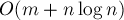 для выполнения запросов над элементами.
Под весовой эвристикой подразумевается, что мы всегда будем добавлять меньшее из двух множеств в большее. Добавление одного множества в другое легко реализовать за время порядка размера добавляемого множества, а поиск лидера — за время при таком способе хранения.
Докажем асимптотику для выполнения запросов. Зафиксируем произвольный элемент и проследим, как на него воздействовали операции объединения . Когда на элемент воздействовали первый раз, мы можем утверждать, что размер его нового множества будет как минимум  . Когда на воздействовали второй раз — можно утверждать, что он попадёт в множество размера не менее
. Когда на воздействовали второй раз — можно утверждать, что он попадёт в множество размера не менее  (т.к. мы добавляем меньшее множество в большее). И так далее — получаем, что на элемент могло воздействовать максимум операций объединения. Таким образом, в сумме по всем вершинам это составляет
(т.к. мы добавляем меньшее множество в большее). И так далее — получаем, что на элемент могло воздействовать максимум операций объединения. Таким образом, в сумме по всем вершинам это составляет  , плюс по на каждый запрос — что и требовалось доказать.
, плюс по на каждый запрос — что и требовалось доказать.
Приведём пример реализации:
vector<int> lst[MAXN]; int parent[MAXN]; void make_set (int v) { lst[v] = vector<int> (1, v); parent[v] = v; } int find_set (int v) { return parent[v]; } void union_sets (int a, int b) { a = find_set (a); b = find_set (b); if (a != b) { if (lst[a].size() < lst[b].size()) swap (a, b); while (!lst[b].empty()) { int v = lst[b].back(); lst[b].pop_back(); parent[v] = a; lst[a].push_back (v); } } }
Также эту идею добавления элементов меньшего множества в большее можно использовать и вне рамок DSU, при решении других задач.
Например, рассмотрим следующую задачу: дано дерево, каждому листу которого приписано какое-либо число (одно и то же число может встречаться несколько раз у разных листьев). Требуется для каждой вершины дерева узнать количество различных чисел в её поддереве.
Применив в этой задаче эту же идею, можно получить такое решение: пустим обход в глубину по дереву, который будет возвращать указатель на  чисел — список всех чисел в поддереве этой вершины. Тогда, чтобы получить ответ для текущей вершины (если, конечно, она не лист) — надо вызвать обход в глубину от всех детей этой вершины, и объединить все полученные в один, размер которого и будет ответом для текущей вершины. Для эффективного объединения нескольких в один как раз применим описанный выше приём: будем объединять два множества, просто добавляя по одному элементы меньшего множества в большее. В итоге мы получим решение за
чисел — список всех чисел в поддереве этой вершины. Тогда, чтобы получить ответ для текущей вершины (если, конечно, она не лист) — надо вызвать обход в глубину от всех детей этой вершины, и объединить все полученные в один, размер которого и будет ответом для текущей вершины. Для эффективного объединения нескольких в один как раз применим описанный выше приём: будем объединять два множества, просто добавляя по одному элементы меньшего множества в большее. В итоге мы получим решение за  , поскольку добавление одного элемента в производится за .
, поскольку добавление одного элемента в производится за .
Хранение DSU с сохранением явной структуры деревьев. Переподвешивание. Алгоритм поиска мостов в графе за в среднем в онлайне
Одно из мощных применений структуры данных "системы непересекающихся множеств" заключается в том, что она позволяет хранить одновременно как сжатую, так и несжатую структуру деревьев. Сжатая структура может использоваться для быстрого объединения деревьев и проверки на принадлежность двух вершин одному дереву, а несжатая — например, для поиска пути между двумя заданными вершинами, или прочих обходов структуры дерева.
При реализации это означает, что помимо обычного для DSU массива сжатых предков мы заведём массив обычных, несжатых, предков . Понятно, что поддержание такого массива никак не ухудшает асимптотику: изменения в нём происходят только при объединении двух деревьев, и лишь в одном элементе.
С другой стороны, при применении на практике нередко требуется научиться соединять два дерева указанным ребром, не обязательно выходящим из их корней. Это означает, что у нас нет другого выхода, кроме как переподвесить одно из деревьев за указанную вершину, чтобы затем мы смогли присоединить это дерево к другому, сделав корень этого дерева дочерней вершиной ко второму концу добавляемого ребра.
На первый взгляд кажется, что операция переподвешивания — очень затратна и сильно ухудшит асимптотику. Действительно, для переподвешивания дерева за вершину мы должны пройтись от этой вершины до корня дерева, обновляя везде указатели и .
Однако на самом деле всё не так плохо: достаточно лишь переподвешивать то из двух деревьев, которое меньше, чтобы получить асимпотику одного объединения, равную в среднем.
Более подробно (включая доказательства асимптотики) см. алгоритм поиска мостов в графе за в среднем в онлайне.
Историческая ретроспектива
Структура данных "система непересекающихся множеств" была известна сравнительно давно.
Способ хранения этой структуры в виде леса деревьев был, по всей видимости, впервые описан Галлером и Фишером в 1964 г. (Galler, Fisher "An Improved Equivalence Algorithm"), однако полный анализ асимптотики был проведён гораздо позже.
Эвристики сжатия путей и объединения по рангу, по-видимому, разработали МакИлрой (McIlroy) и Моррис (Morris), и, независимо от них, Триттер (Tritter).
Некоторое время была известна лишь оценка на одну операцию в среднем, данная Хопкрофтом и Ульманом в 1973 г. (Hopcroft, Ullman "Set-merging algomthms") — здесь — итерированный логарифм (это медленно растущая функция, но всё же не настолько медленно, как обратная функция Аккермана).
Впервые оценку , где — обратная функция Аккермана — получил Тарьян в своей статье 1975 г. (Tarjan "Efficiency of a Good But Not Linear Set Union Algorithm"). Позже в 1985 г. он вместе с Льювеном получил эту временную оценку для нескольких различных ранговых эвристик и способов сжатия пути (Tarjan, Leeuwen "Worst-Case Analysis of Set Union Algorithms").
Наконец, Фредман и Сакс в 1989 г. доказали, что в принятой модели вычислений любой алгоритм для системы непересекающихся множеств должен работать как минимум за в среднем (Fredman, Saks "The cell probe complexity of dynamic data structures").
Впрочем, следует также отметить, что есть несколько статей, оспаривающих эту временную оценку и утверждающих, что система непересекающихся множеств с эвристиками сжатия пути и объединения по рангу работает за в среднем: Zhang "The Union-Find Problem Is Linear", Wu, Otoo "A Simpler Proof of the Average Case Complexity of Union-Find with Path Compression".
Задачи в online judges
Список задач, которые можно решить с помощью системы непересекающихся множеств:
- TIMUS #1671 "Паутина Ананси" [сложность: низкая]
- CODEFORCES 25D "Дороги не только в Берляндии" [сложность: средняя]
- TIMUS #1003 "Чётность" [сложность: средняя]
- SPOJ #1442 "Chain" [сложность: средняя]
Литература
- Томас Кормен, Чарльз Лейзерсон, Рональд Ривест, Клиффорд Штайн. Алгоритмы: Построение и анализ [2005]
- Kurt Mehlhorn, Peter Sanders. Algorithms and Data Structures: The Basic Toolbox [2008]
- Robert Endre Tarjan. Efficiency of a Good But Not Linear Set Union Algorithm [1975]
- Robert Endre Tarjan, Jan van Leeuwen. Worst-Case Analysis of Set Union Algorithms [1985]